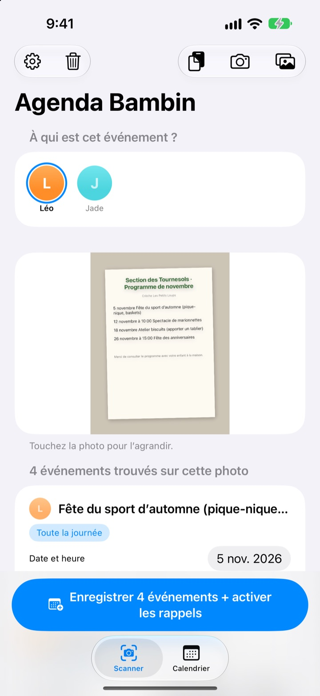
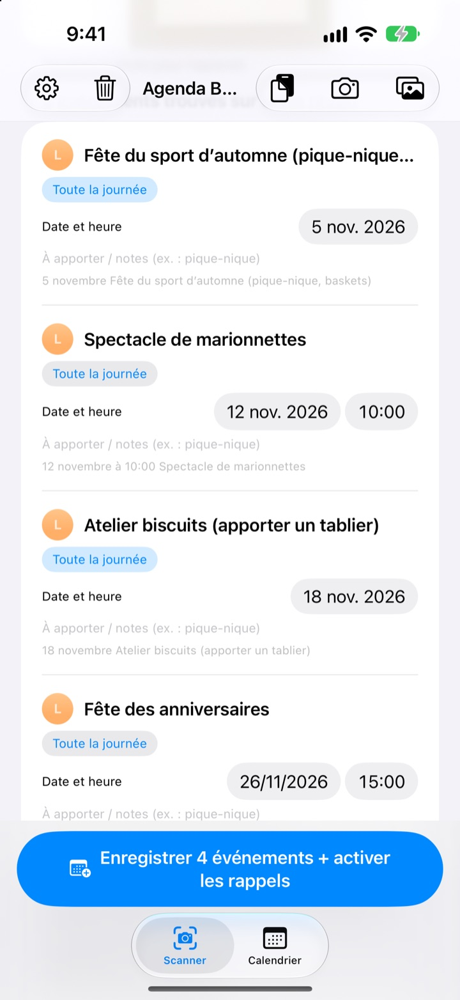
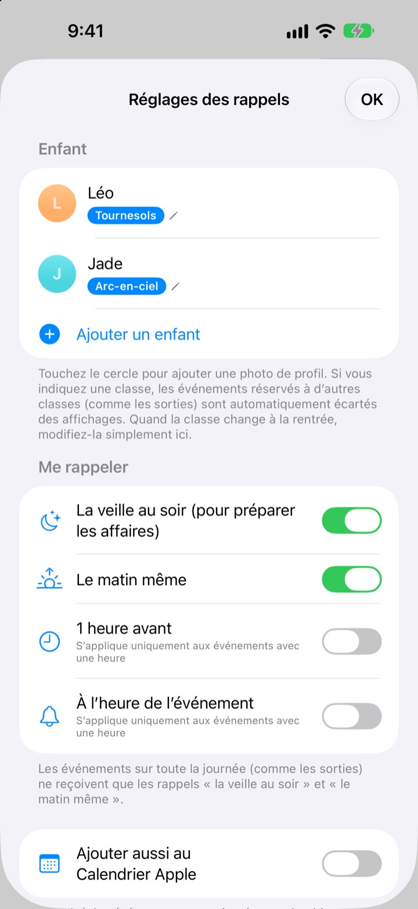
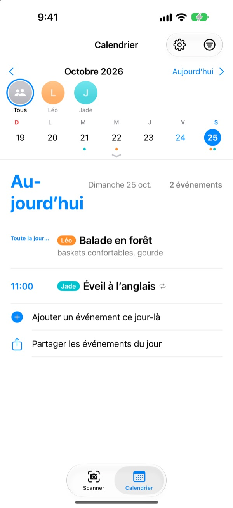

Une photo du mot.
Un rappel la veille.
Photographiez le planning du mois remis par la crèche. Agenda Bambin lit les dates, les heures et le nom de chaque activité, et les ajoute d’un coup. La veille de la sortie, à 20 h, un rappel vous dit de préparer le pique-nique.
Tout est gratuit. Vos photos restent sur votre iPhone.

Prenez un mot en photo
Voici un exemple de mot annonçant les activités du mois prochain. Prenez-le en photo : comme dans l’app, les activités et les affaires à prévoir en sont tirées, puis les rappels sont programmés aux moments choisis.
Vous recopiez encore le mot de la crèche dans votre agenda ?
Cinq ou six activités par mois, et à chaque fois quelque chose de différent à prévoir : pique-nique, tenue de sport, tablier. Le planning aimanté sur le frigo, on ne le voit pas sur le trajet du travail, et on y repense toujours le matin même. Agenda Bambin transforme cette feuille en événements et en rappels.
Une photo, tout le mois
Grille mensuelle, mot aux parents ou affichette : prenez une photo ou choisissez-la dans la photothèque, et les dates, heures et noms des activités sont lus pour vous. Vous pouvez aussi coller un message de la crèche ; « demain » ou « ce vendredi » deviennent de vraies dates.
Avant d’enregistrer, corrigez le titre, la date ou les affaires à prévoir, et balayez ce qui ne sert pas. Indiquez la section de votre enfant, et les activités réservées aux autres sections sont écartées.

La veille au soir, un rappel
Choisissez 20 h la veille, 7 h 30 le matin même, 1 heure avant ou à l’heure pile. Les affaires à prévoir s’affichent dans le rappel : le sac est prêt à temps.
Avec le Calendrier Apple, les événements vont dans un calendrier au nom de votre enfant, sans jamais être ajoutés deux fois.

Plusieurs enfants, toute la famille
Chaque enfant a sa couleur. Affichez-les tous ensemble ou un par un ; l’app s’appuie sur l’historique pour deviner à qui est destiné un nouveau mot.
Envoyez un lien d’invitation : votre conjoint, les grands-parents ou la nounou voient et modifient les mêmes événements. Un widget sur l’écran d’accueil affiche ce qui arrive.

Trois étapes pour commencer
- 1
Ajoutez votre enfant
Son prénom et sa section. La photo de profil, quand vous voulez.
- 2
Photographiez le mot
Bien de face, texte net : la lecture n’en sera que meilleure.
- 3
Vérifiez et enregistrez
Autorisez les notifications, et les rappels arrivent au moment choisi.
Quand arrivent les rappels
- 20 h la veille
- Pour préparer les affaires. Activé par défaut
- 7 h 30 le matin même
- Le programme du jour. Activé par défaut
- 1 heure avant
- Seulement pour les activités avec une heure
- À l’heure de l’événement
- Seulement pour les activités avec une heure
Les activités sur toute la journée, comme une sortie, n’ont que le rappel de la veille et celui du matin. Activez-les ou désactivez-les à tout moment dans les réglages.
Tout est gratuit
Gratuit
- Lecture des activités depuis des photos et des messages
- Corrections avant d’enregistrer, filtre des autres sections
- Rappels la veille, le matin, 1 heure avant et à l’heure
- Une couleur par enfant et un calendrier commun
- Synchronisation avec le Calendrier Apple
- Partage en famille par lien d’invitation
- Widget pour l’écran d’accueil
Soutenir le développeur
- Depuis les réglages, laissez un petit pourboire du montant de votre choix
- Le pourboire ne débloque rien. L’app fonctionne pareil sans
Ni publicité ni abonnement.
Questions fréquentes
Quelles photos fonctionnent ?
Les plannings mensuels en grille, les mots aux parents rédigés en phrases et les affichettes ou prospectus. Une photo prise bien de face avec un texte net est mieux lue. Vous pouvez aussi sélectionner plusieurs photos à scanner d’un coup.
Il manque des activités ou un titre comporte une faute.
L’écriture manuscrite ou un texte pâle peuvent être difficiles à lire. Corrigez le titre, la date ou les affaires directement dans la liste, ou balayez ce dont vous n’avez pas besoin. Pour une activité manquante, utilisez « Ajouter un événement manuellement » dans l’onglet Scanner, puis enregistrez à nouveau.
Je ne reçois pas de rappels.
Vérifiez dans Réglages > Notifications > Agenda Bambin que les notifications sont autorisées. Dans les réglages de l’app (⚙️), choisissez aussi quels rappels vous voulez recevoir.
Des activités d’autres sections apparaissent.
Indiquez la section de votre enfant dans les réglages : les activités réservées aux autres sections seront écartées. À la rentrée, si la section change, il suffit de la modifier là.
J’ai plusieurs enfants.
Ajoutez autant d’enfants que vous voulez dans les réglages, chacun avec sa photo. Au moment du scan, choisissez pour qui sont les activités : chaque enfant a sa couleur dans le calendrier, avec une vue commune et un filtre par enfant.
Comment partager le planning avec mon conjoint ?
Dans les réglages, sous « Partage des événements », touchez « Inviter des proches » et envoyez le lien par message. La personne invitée voit et modifie tous les enfants et événements, et les changements faits de part et d’autre apparaissent aussitôt des deux côtés. Rien à voir avec le Partage familial d’Apple.
Existe-t-il d’autres façons de partager ?
Le bouton de partage de l’onglet Calendrier envoie un fichier Agenda Bambin, un fichier de calendrier (.ics) ou un résumé texte. Avec « Ajouter aussi au Calendrier Apple », un calendrier au nom de votre enfant est créé ; partagez-le via iCloud dans l’app Calendrier pour que la famille suive aussi.
Mes photos ou mes événements sont-ils envoyés quelque part ?
Non. Le texte des photos est lu entièrement sur l’appareil, et les données y restent. Les événements ne passent par votre iCloud que si vous invitez quelqu’un via « Partage des événements », et uniquement vers les personnes invitées.
Un souci ou une idée ? Écrivez à leeo@kakao.com. Nous répondons en général sous 2 à 3 jours. Pensez à préciser le modèle de votre appareil et la version d’iOS.